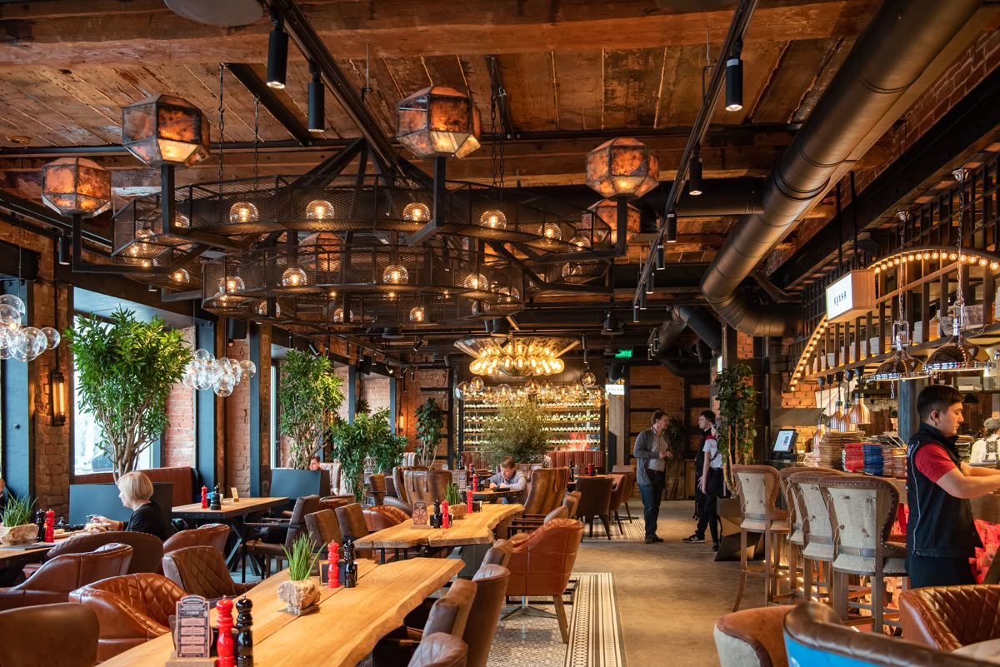
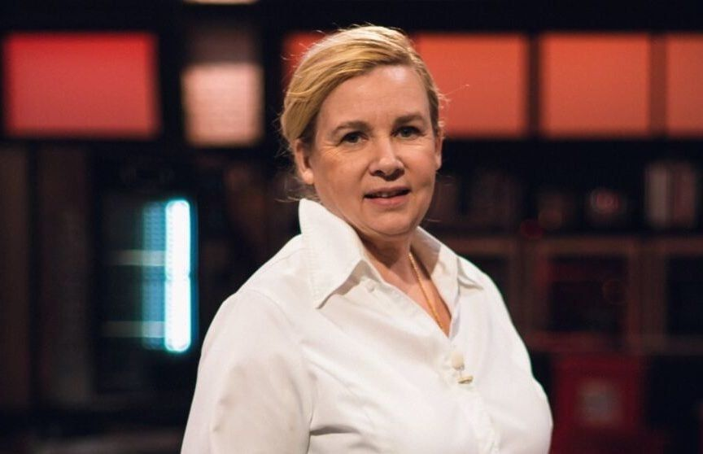
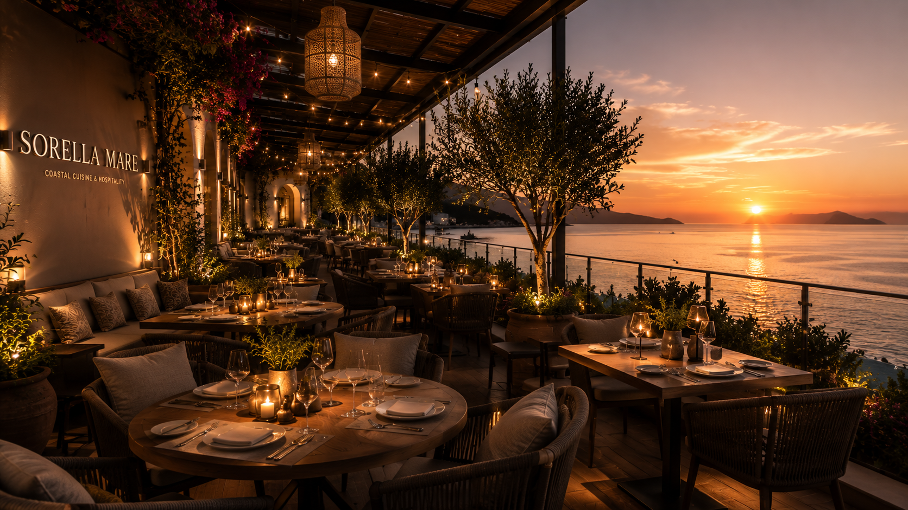
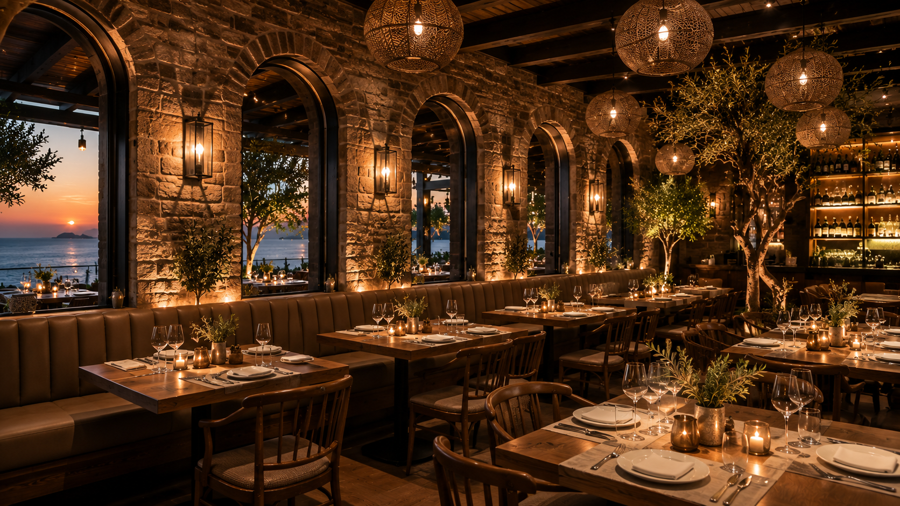
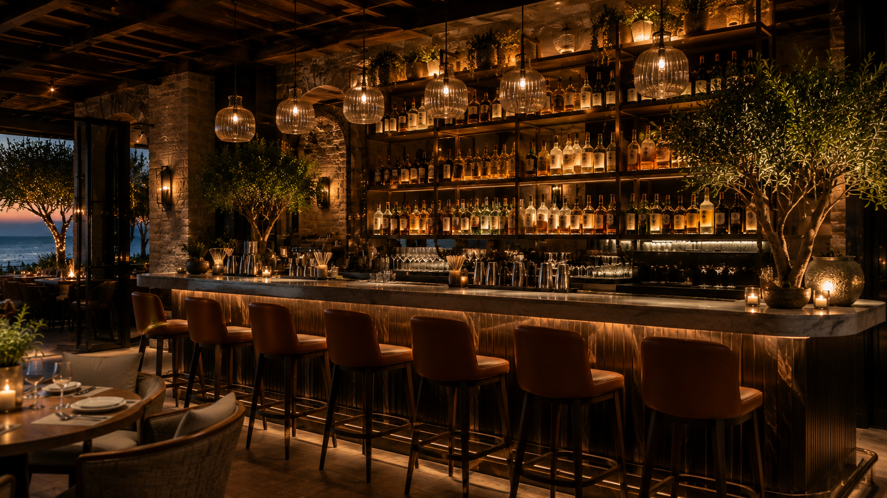
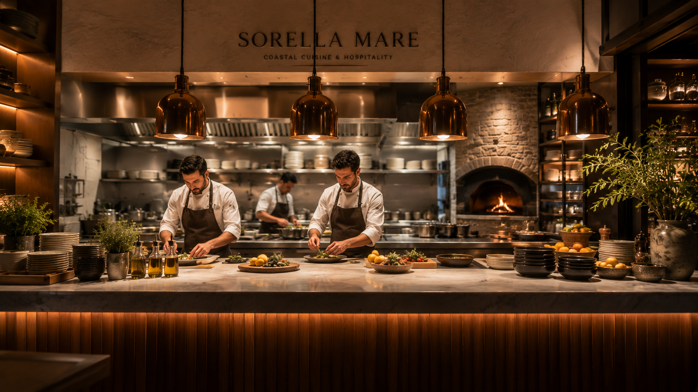
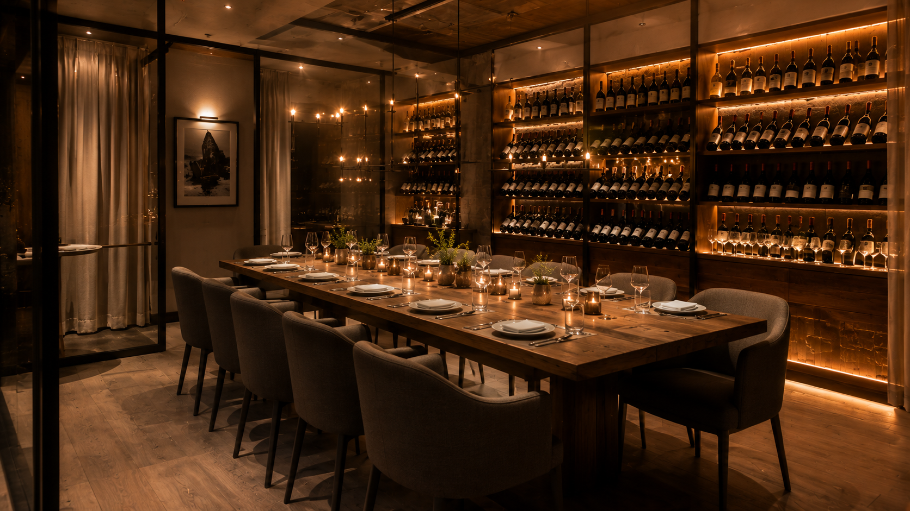
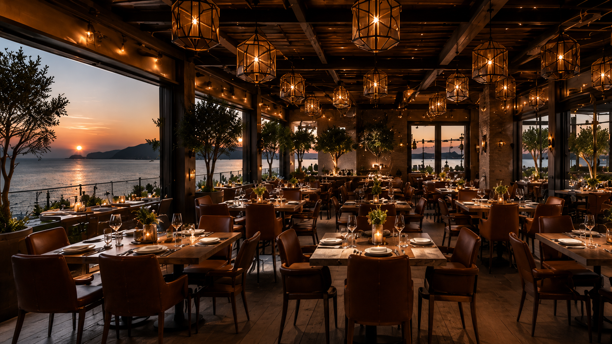

Mission
To create extraordinary dining moments rooted in seasonality, elegance, and respect for the sea.
Our Heritage
From the first invitation to the final course, every detail is shaped with care.

Sorella Mare began as a vision to bring together coastal charm, culinary mastery, and thoughtful hospitality in one unforgettable dining experience inspired by the Mediterranean coast.
To create extraordinary dining moments rooted in seasonality, elegance, and respect for the sea.
To become a timeless destination where guests experience modern luxury through flavor and atmosphere.

Chef’s Perspective
Elena draws inspiration from the Mediterranean coast, balancing technique, freshness, and emotion in every plate.
Inside Sorella Mare
Discover warm spaces designed for unforgettable dining, where every corner reflects timeless Mediterranean elegance.






We believe great dining should feel effortless, sensual, and deeply personal.